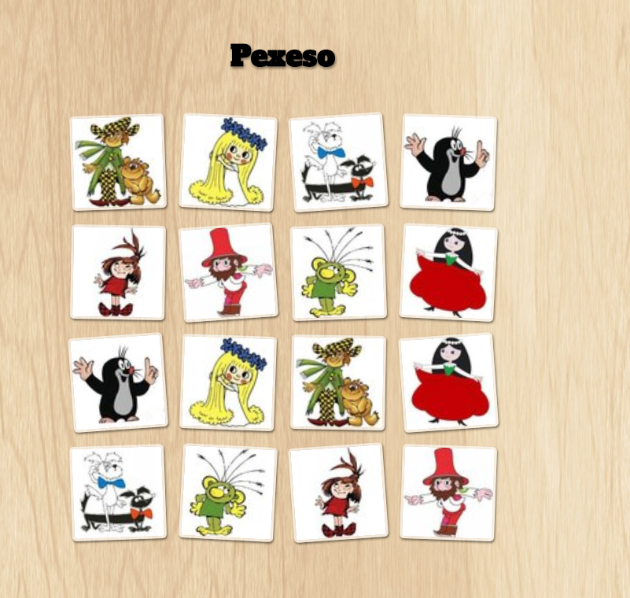

Úkol 03 - Pexeso
Stůl s kartičkami
Vytvořte jednoduchou webovou aplikaci, která bude zobrazovat kartičky pexesa v náhodném pořadí.
Kartičky pexesa si můžete vytvořit vlastní nebo použít ty z hodiny. Podklady z hodiny stáhnete v odevzdávárně (WebLekce03.zip).
Děkuji Martině Adamusové Hanušové za poskytnutí večerníčkových kartiček.
Pokud se vám nechce vytvářet vlastní kaskádové styly, můžete využít ty od Luďka Rolečka: Ukol03-static-demo.zip
Stačí jedna sada kartiček.

Seznam přeborníků pexesa
Dále připravte stránku, na které bude tabulka nejlepších hráčů pexesa.
Pro tyto účely si připravte novou třídu Hrac (ve stejné složce jako HlavniController).
Třída bude združovat pro daného hráče údaje
jmeno, prijmeni, email,
hracovu oblibenaBarva, pocetVyhranychTurnaju, pocetTurnajuCelkem
Třída bude mít vnitřní proměnné, konstruktor a metody get a set pro zpřístupnění vnitřních proměnných.
Pokud víte, jak to napsat, napište ji sami. Pokud ne, můžete vyjít z mojí verze:
public class Hrac {
private String jmeno;
private String prijmeni;
private int pocetVyhranychTurnaju;
private int pocetTurnajuCelkem;
public Hrac() {
}
public Hrac(String jmeno, String prijmeni, int pocetVyhranychTurnaju, int pocetTurnajuCelkem) {
this.jmeno = jmeno;
this.prijmeni = prijmeni;
this.pocetVyhranychTurnaju = pocetVyhranychTurnaju;
this.pocetTurnajuCelkem = pocetTurnajuCelkem;
}
public String getJmeno() {
return jmeno;
}
public void setJmeno(String newValue) {
jmeno = newValue;
}
public String getPrijmeni() {
return prijmeni;
}
public void setPrijmeni(String newValue) {
prijmeni = newValue;
}
public int getPocetVyhranychTurnaju() {
return pocetVyhranychTurnaju;
}
public void setPocetVyhranychTurnaju(int newValue) {
pocetVyhranychTurnaju = newValue;
}
public int getPocetTurnajuCelkem() {
return pocetTurnajuCelkem;
}
public void setPocetTurnajuCelkem(int newValue) {
pocetTurnajuCelkem = newValue;
}
public double getUspesnost() {
return 100.0 * pocetVyhranychTurnaju / pocetTurnajuCelkem;
}
}
Jak si můžete všimnout, některé datové položky jí chybí (např. email, oblíbená barva). Dopište je do třídy. Pokud chcete, můžete přidat i nějaké další.
V HlavniController vytvořte List<Hrac> prebornici.
Je to podobné jako List<String> vyroky
private static final List<Hrac> HRACI = Arrays.asList(
new Hrac("Jmeno1", "Prijmeni1", 20, 100),
new Hrac("Jmeno2", "Prijmeni2", 80, 100),
new Hrac("Jmeno3", "Prijmeni3", 950, 1000),
new Hrac("Jmeno4", "Prijmeni4", 50, 500),
new Hrac("Jmeno5", "Prijmeni5", 75, 400),
);
Když jste ve třídě Hrac nadefinovali metodu String getJmeno(),
a máte v ThymeLeafu v proměnné ${prebornik} jednoho hráče (objekt třídy Hrac)
lze k jeho jménu v Thymeleafu přistupovat pomocí
${prebornik.jmeno}
Jak bude web vypadat, necháme na vás. Ukázkový web můžete vidět na https://margot.tomcat.cloud/ukol03/
Pár tipů:
-
Trik s cestami, aby se soubory se šablonami daly pořád otevírat jako statické soubory:
<link rel="stylesheet" href="../static/css/styles.css" th:href="${'css/styles.css'}" /> - Pokud si nebudete vůbec vědět rady, v odevzdávárně je můj vzorový domácí úkol. Snažte se ho ale nepoužít.
-
Vyjděte ze šablony projektu z hodiny (Czechitas Web App Template v2). Složku si prostě okopírujte a otevřete ji v IntelliJ IDEA. Po otevření je nutné přejmenovat tato místa, kde je jméno a adresa aplikace uvedena v konfiguračních souborech:
- PROJEKT/src/main/resources/application.properties -> server.context-path = /ukol03
- PROJEKT/pom.xml -> /project/groupId = cz.czechitas.java2
- PROJEKT/pom.xml -> /project/artifactId = ukol03
- PROJEKT/pom.xml -> /project/name = ukol03
- PROJEKT/pom.xml -> /project/build/finalName = ukol03
- Archív .war vytvoříte v pravém panelu Maven Projects -> Lifecycle -> clean a potom Maven Projects -> Lifecycle -> package.
- Pozor! Mezi zdrojovým projektem (složkou) a výsledným webovým archívem .war je velký rozdíl. Do Tomcatu se nasazuje výsledný archív .war, do odevzdávárny na Google Drivu se nahrává zazipovaná složka celého projektu.
- Do Tomcatu se NIKDY nekopíruje rozbalená složka webu, pouze archív .war. Tomcat si tento archív sám rozbalí.
- Pokud se chcete zbavit nasazené webové aplikace z Tomcatu a máte ho spuštěný, smažte pouze archív .war ve složce TOMCAT/webapps. Nemažte rozbalenou složku webu. Tomcat sám pozná, že jste odebrali zdrojový archív .war a rozbalenou složku smaže sám. To slouží zároveň jako potvrzení, že byla webová aplikace úspěšně sesazena. Pouze pokud byste měly Tomcat zastavený, smažte i rozbalenou složku v TOMCAT/webapps.
- Pro psaní doporučuji používat javový projekt se zabudovaným malým Tomcatem, který spustíte klasicky pomocí zelené šipky. Adresa vašeho webu je potom http://localhost:8080/ukol03. Případně místo /ukol03 to, co jste uvedly v application.properties -> server.context-path. V tomto případě stačí pouze editovat zdrojové soubory webu a obnovovat stránku v prohlížeči.
- Pro zajímavost, jméno výsledného archívu .war se nastavuje v PROJEKT/pom.xml -> /project/build/finalName
Odevzdání domácího úkolu
Domácí úkol (celou složku s projektem, ne jen výsledný webový archív .war!)
zabalte pomocí 7-Zipu pod jménem Ukol03-Vase_Jmeno.7z.
(Případně lze použít prostý zip, například na Macu).
Takto vytvořený archív nahrajte na
Google Drive
do složky Ukol03.
Takto vytvořený archív .war (ukol03.war) nasaďte do vašeho lokálního Tomcatu (JAVA-TRAINING/Tomcat/webapps) a vyzkoušejte, že funguje ( http://localhost:8080/ukol03/ ).
Po odladění nasaďte tento archív ještě přes FTP na server Tomcat.cloud ( http://sladkost.tomcat.cloud/ukol03/ ).
Vytvořte snímek obrazovky spuštěného programu a pochlubte se s ním ve fotoalbu Ukol03 na Facebooku.
Pokud byste chtěli odevzdat revizi úkolu (např. po opravě),
zabalte ji a nahrajte ji na stejný Google Drive znovu,
jen tentokrát se jménem Ukol03-Vase_Jmeno-verze2.7z
Termín odevzdání je do úterý 20. 3. 2018 23:59. Pokud úkol nebo revizi odevzdáte později, prosím pošlete email nebo zprávu přes FB svému opravujícímu kouči. Pokud nevíte, kdo to je, pošlete zprávu oběma (Lucce Popelové i Karolíně Malé).